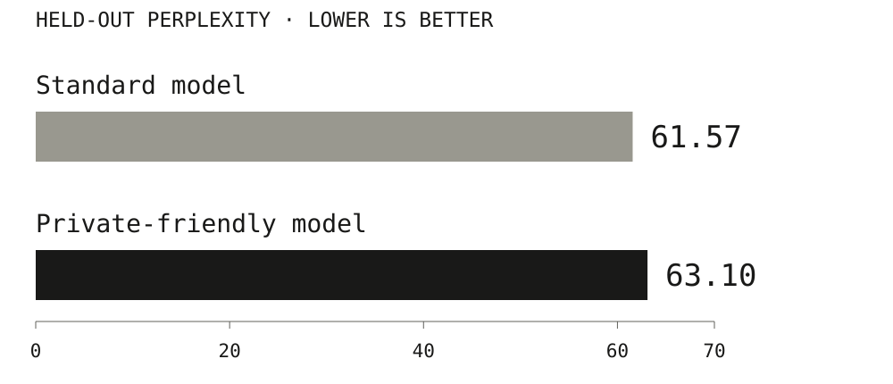

Blindfold runs an AI model on three servers without any of them seeing your input.
| Stays on your computer | Goes to each server |
|---|---|
| Your actual text | A random-looking piece of it |
| The final answer | The public model + random masks |
Blindfold runs an AI model on three servers without any of them seeing your input.
| Stays on your computer | Goes to each server |
|---|---|
| Your actual text | A random-looking piece of it |
| The final answer | The public model + random masks |
| If these servers’ pieces are combined | Can your input be read? |
|---|---|
| Any one server | No |
| Any two servers | No |
| All three servers | Yes |
| One of the three is yours | No |
Anyone with all three pieces can read the input, and that can’t be detected.

| Step | Who does it | Messages |
|---|---|---|
| Split the input into pieces | Your computer | Pieces go to the servers |
| Multiply by public weights | Each server, on its own | None needed |
| Square | Servers, through your computer | Checked before it’s used |
| Multiply again, then check | Servers, then your computer | Answer pieces come back |
| Per character | 2 round trips |
| Built | Not built yet |
|---|---|
| A …-parameter note model | Real-size language models |
| Three servers, over the network or USB | Servers run by different people |
| Same output as the normal model | A full security review |
| Your computer makes the random masks | Servers make them and talk directly |